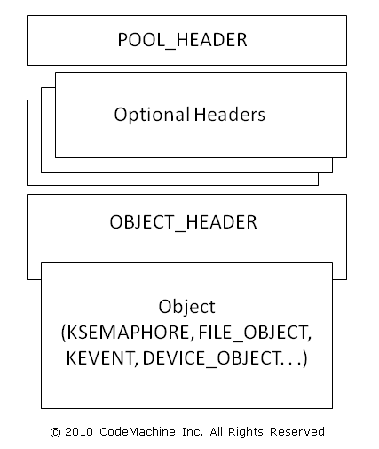
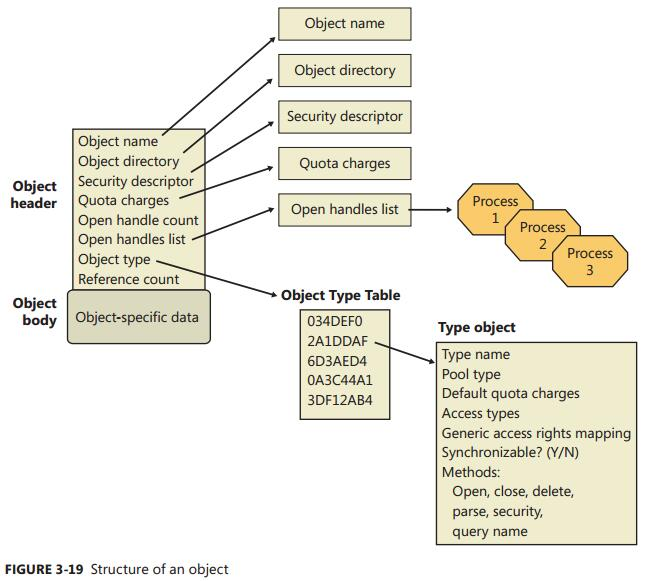

对象管理是 Windows Executive 的一个子系统实现, 用于管理 Windows 资源. 资源包括物理设备, 文件, 文件目录, 注册表条目, 正在运行的进程等等. 所有子系统访问资源都必须通过对象管理子系统.
对象实际上就是一组数据结构加操作(函数).
各种 Object 的共有的信息 (例如, 对象类型, 对象的引用计数, 句柄数等信息) 保存在 OBJECT_HEADER 与其他的几个结构中. 换而言之, 在对象管理器内部, 不同类型的对象具有相同的 Object Header, 但 Object Body 部分却是不同的.
Windows 有三种类型的对象: 内核对象 (Kernel objects) , 执行体对象 (Executive objects), 和 GDI/User 对象.
内核对象: 表示一些基本资源, 如物理设备, 同步服务等等. 用户态的程序不能访问内核对象.
执行体对象: 用户态的系统服务与应用程序使用执行对象, 这是 Windows Executive 对外暴露的对象, 用来封装一个或多个内核对象. 执行对象还用于实现 NT 子系统或 POSIX 子系统的一些功能.
用户对象: 每个对象仅有一个句柄, 句柄不能复制或继承, 不能引用其他用户会话中的进程的用户句柄. 任何进程只要有对某个用户句柄访问权限, 即可以访问该用户对象. 一个进程最多有 65536 个用户对象句柄.
用户对象包括: 快捷键表 HACCEL, 插入点光标, 鼠标指针 HCURSOR, DDE 会话, 窗口钩子, 图标 HICON, 菜单 HMENU, 窗口 HWND, 窗口位置.GDI 对象: 每个对象仅有一个句柄, 句柄为进程私有. 一个进程最多有 65536 个 GDI 对象句柄.
GDI 对象包括: 位图 HBITMAP, 画刷 HBRUSH, 设备环境 (DC) HDC, 增强型图元文件 (EMF) , EMF 设备环境, 字体 HFONT, 内存 DC, 图元文件, 图元文件 DC, 调色板 HPALETTE, 画笔 HPEN, 区域 (Region) HRGN.
Windows NT 暴露的执行对象
| 对象类型 | 结构 | 代表含义 |
|---|---|---|
| Process | _EPROCESS | 执行一组线程对象所必须的虚拟地址空间和控制信息 |
| Thread | _ETHREAD | 进程内部的一个可执行实体 |
| Job | _EJOB | 指一组进程, 通过作业机制, 可以像单个实体那样来管理他们 |
| Section | _SECTION_OBJECT | 共享内存的一个区域 (也称为 File mapping) |
| File | _FILE_OBJECT | 一个已打开的文件或者 I/O 设备的实例 |
| Token | _TOKEN | 一个进程或者线程的安全轮廓 (安全ID, 用户权限等) |
| Event | _KEVENT | 一种具有持久状态 (有信号或无信号的) 对象,可用于同步或者通知 |
| Semaphore | _KSEMAPHORE | 信号量是一个计数器, 提供资源门控制能力, 对于该信号量所保护的资源只允许某个最大数目的线程访问 |
| Mutex | _KMUTEX | 用于顺序访问一个资源的一种同步机制 |
| Timer | _ETIMER | 这是一种当固定长度的时间过去时通知某个线程的机制 |
| IoCompletion | 使线程能够将 “I/O 操作完成通知” 进出队列的一种方法 | |
| Key | _CM_KEY_BODY | 一种引用注册表中数据的机制. 虽然键出现在对象管理器的命名空间中, 但是却是由配置管理器来管理的, 其管理方式类似于文件系统驱动程序管理文件对象的方式. 与该键对象关联在一起的有零个或多个键值; 一个键值中包含有关该键的数据 |
| Directory | 对象管理器中命名空间的虚拟目录, 负责包含其他的对象或对象目录 | |
| TpWorkerFactory | 负责执行一组特定任务的线程集合. Windows 通过线程池的方式暴露工作者工厂对象 | |
| Tm (资源管理器), TmTx (事务), TmTm (事务管理器), TmEn (登记) | 内核事务管理器 (KTM) 为各种事物或登记而使用的对象, 他们是资源管理器或事务管理器的一部分. | |
| WindowStation | tagWINDOWSTATION | 该对象包含一个剪贴板, 一组全局原子, 一组桌面对象 |
| Desktop | tagDESKTOP | 这是一个包含在窗口站内部的对象. 它有一个逻辑显示器表面, 包含了窗口, 菜单 和 钩子. |
| PowerRequest | 该对象与一个线程关联在一起, 该线程执行 SetThreadExecutionState 调用请求指定的电源改变, 比如防止睡眠. | |
| EtwConsumer | 代表一个已连接的 ETW 实时消费者已经通过 StartTrace API 进行了注册 | |
| EtwRegistration | 代表一个注册对象, 它与某个用户模式(或内核模式) ETW 提供者关联 | |
| SymbolicLink | _OBJECT_SYMBOLIC_LINK | 被创建用来支持别名,这些别名可以来用帮助映射网络共享 |
| Type | _OBJECT_TYPE | 通过元数据来描述所有其他对象常见属性的一个对象 |
其他对象参考 Windows Object Categories.aspx)
除了以上这些对象之外, 还有 Device, Driver, Adapter 等用于设备驱动的对象类型, 这些对象类型并由有专用的系统调用, 而是借用 NtCreateFile() 作为创建/打开的方法
对象结构


如图所示, 每个对象都有一个对象头和一个对象体. 每个对象头中有一个索引, 指向一个被称为类型对象的特殊对象, 该对象包含的信息对于它的每个实例是公共的.
另外,还可以有多达 7 个可选的子头:
- 名称信息头(
_OBJECT_HEADER_NAME_INFO) - 配额信息头(
_OBJECT_HEADER_QUOTA_INFO) - 进程信息头(
_OBJECT_HEADER_PROCESS_INFO) - 句柄信息头(
_OBJECT_HEADER_HANDLE_INFO) - 创建者信息头(
_OBJECT_HEADER_CREATOR_INFO) - 审计信息头(
_OBJECT_HEADER_AUDIT_INFO) - 填充信息头(
_OBJECT_HEADER_PADDING_INFO)
对象头
我们来看下对象头的定义:
|
|
Body 就是具体对象类型的数据结构本身, 即一个数据结构的起点.
对象头中的域
| 域 | 用途 |
|---|---|
| HandleCount | 维护一个计数值, 记录了当前打开打开的指向该对象的句柄数 |
| PointerCount | 维护一个计数值, 记录了该对象的引用个数 (每个句柄也算一次引用). 内核模式组件可以不通过句柄, 而直接用指针来引用对象. |
| SecurityDescriptor | 决定谁可以使用该对象, 以及允许他们如何使用它. (根据定义, 没有名称的对象是没有安全性的) |
| TypeIndex | 包含一个指向类型对象的索引, 该类型对象包含了这种类型对象的公共属性, 所有的类型对象都存储在 nt!ObTypeIndexTable 表中 |
| InfoMask | 可选头掩码, 除了创建者信息子头外, 只要存在, 就位于对象的前面. 该掩码通过 nt!ObpInfoMaskToOffset 表被转换成一个负的偏移;每个可选头都有一个与之关联的 1 字节索引, 将该可选头置于相对其他子头出现的位置 |
| Flags | 对象的特征和对象属性 |
| Lock | 针对每个对象的锁, 当修改该对象头部的域或者任何子头的域时, 需要用到该锁 |
| TraceFlags | 追踪开启标志, 用来调试引用计数问题 |
对象 Flags
| 属性标志 | 头标志 | 用途 |
|---|---|---|
| OBJ_INHERIT | 保存在句柄表项中 | 决定指向对象的句柄将来是否被子进程继承, 以及进程是否可以使用 DuplicateHandle 来执行句柄复制 |
| OBJ_PERMANENT | OB_FLAG_PERMANENT_OBJECT | 定义与引用计数相关的对象保持力行为 |
| OBJ_EXCLUSIVE | OB_FLAG_EXCLUSIVE_OBJECT | 决定一个对象只能被创建该对象的进程所使用 |
| OBJ_CASE_INSENSITIVE | 保存在句柄表项中 | 指定在命名空间中查找该对象应该按大小写无关的方式进行 |
| OBJ_OPENIF | 不保存, 仅在运行时使用 | 如果将此标志指定给创建对象的例程, 并且该对象已存在, 则例程应打开该对象. 否则, 创建对象的例程将返回 STATUS_OBJECT_NAME_COLLISION 的 NTSTATUS 代码. |
| OBJ_OPENLINK | 不保存, 仅在运行时使用 | 指定对象管理器应该打开一个指向符号链接的句柄, 而不是指向目标对象的句柄 |
| OBJ_KERNEL_HANDLE | OB_FLAG_KERNEL_OBJECT | 指定指向该对象的句柄应该是一个内核句柄 |
| OBJ_FORCE_ACCESS_CHECK | 不保存, 仅在运行时使用 | 指定即使该对象是用内核模式中打开的, 也要执行完全的访问检查 |
| OBJ_KERNEL_EXCLUSIVE | OB_FLAG_KERNEL_ONLY_ACCESS | 禁止任何用户模式进程打开指向该对象的句柄, 用于保护 /Device/PhysicalMemory 内存区对象 |
| - | OB_FLAG_DEFAULT_SECURITY_QUOTA | 指定该对象的安全描述符使用模式的 2KB 配额 |
| - | OB_FLAG_SINGLE_HANDLE_ENTRY | 指定句柄信息可选头仅包含一项, 而不是一个数据库 |
| - | OB_FLAG_NEW_OBJECT | 指定该对象已被创建, 但是尚未被插入到对象命名空间中 |
| - | OB_FLAG_DEFER_DELETE_INLINE | 指定该对象正在通过一个延迟删除的辅助线程删除 |
可选对象头
一个对象的可选头包含了用于描述该对象各种类型的元数据. 很明显, 因为它们是可选的, 所以并不是所有的类型的对象都拥有可选头;
甚至于相同类型对象的不同实例也可能包含可选头的不同组合.
这些结构的位置是从对象头的开始减去一个并不固定的偏移量, 此偏移值取决于与对象头相关联的可选头的数量.
对于所有可选头各种可能的情形, 都存在一个响应的偏移量, 但是因为可选头总是按照固定不变的顺序来分配,
所以对于一个给定的头, 它可能出现的位置的数量, 与优先于它而出现的最多可选头数量相同.
偏移的计算公式为: Offset = ObpInfoMaskToOffset[OBJECT_HEADER->InfoMask & (DesiredHeaderBit | (DesiredHeaderBit-1))]
(DesiredHeaderBit | (DesiredHeaderBit-1)) 表示包含在此可选头结构之前的可选头结构.
| 名称 | 结构 | 掩位码 | 偏移 | 用途 |
|---|---|---|---|---|
| 创建者信息 | _OBJECT_HEADER_CREATOR_INFO | 0 (0x01) | ObpInfoMaskToOffset[0x01] | 对于所有同一类型的对象, 链接成一个列表, 并记录下创建该对象的进程, 以及一个后向跟踪项 |
| 名称信息 | _OBJECT_HEADER_NAME_INFO | 1 (0x02) | ObpInfoMaskToOffset[0x03] | 包含对象名称和一个指向对象目录的指针. 对象名称使用该对象对于其他进程也可见, 从而可以共享; 对象目录提供了存储对象名称的层次结构. |
| 句柄信息 | _OBJECT_HEADER_HANDLE_INFO | 2 (0X04) | ObpInfoMaskToOffset[0X07] | 包含一个进程项数据库 (或只有一项), 这些进程都有一个已打开的句柄指向该对象 (以及一个针对每个进程的句柄计数) |
| 配额信息 | _OBJECT_HEADER_QUOTA_INFO | 3 (0x08) | ObpInfoMaskToOffset[0x0F] | 列出了当一个进程打开指向该对象的句柄时需要消耗的资源花费 |
| 进程信息 | _OBJECT_HEADER_PROCESS_INFO | 4 (0x10) | ObpInfoMaskToOffset[0x1F] | 如果这是一个排它性对象, 则包含一个指向所有者进程的指针 |
| 审计信息 | _OBJECT_HEADER_AUDIT_INFO | 5 (0x20) | ObpInfoMaskToOffset[0x3F] | 未知 |
| 填充信息? | _OBJECT_HEADER_PADDING_INFO | 6 (0x40) | ObpInfoMaskToOffset[0x7F] | 未知 |
对象可选头出现的条件
| 名称 | 条件 |
|---|---|
| 创建者信息 | 对象类型必须已经打开维护类型列表标志. 如果驱动程序检验器被启用, 则驱动程序对象已设置此标志. 然而, 若全局标志维护对象类型列表打开, 所有对象的维护类型列表标志也随之打开, 类型对象总是设置该标志 |
| 名称信息 | 对象创建时必须指定名称 |
| 句柄信息 | 对象类型必须已打开维护句柄计数标志. 文件对象, ALPC 对象, 窗口站对象和桌面对象已在其对象类型结构中设置了此标志 |
| 配额信息 | 对象必须不是由初始系统进程或空闲进程创建的 |
| 进程信息 | 对象创建时必须指定排他性对象标志 |
| 审计信息 | 开启对象访问审核功能时使用? 本地组策略有这么个选项… |
| 填充信息 | 未知 |
通用对象服务
Windows 子系统允许每个对象类型提供自己的对象服务供 Windows 应用程序使用.
| 服务 | 用途 |
|---|---|
| Close | 关闭指向某个对象的句柄 |
| Duplicate | 通过先复制句柄, 再将它交给另一进程的方法来共享对象 |
| Make permanent/temporary | 改变对象的保持力 |
| Query object | 获得关于对象的标准属性的信息 |
| Query security | 获取对象的安全描述符 |
| Set security | 改变对象上的保护设置 |
| Wait for a single object | 用一个对象来同步线程的执行 |
| Signal an object and wait for another | 给一个对象 (比如一个事件) 发信号, 并通过另一个对象来同步线程的执行 |
| Wait for multiple objects | 用多个对象来同步线程的执行 |